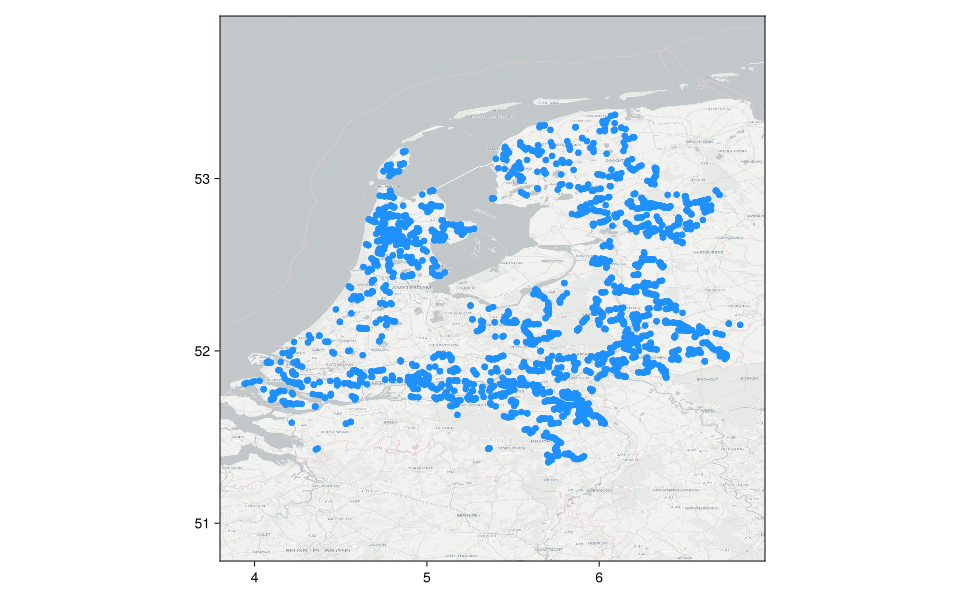
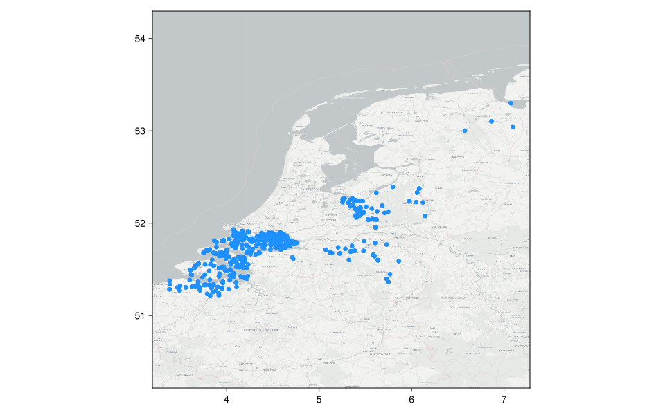

PDOK water-authority telecommunications and ducts
Separate telecommunications-cable and utility-duct route networks from Dutch water authorities; neither optical fibre nor confirmed telecommunications use of ducts is implied.
License, attribution, and processing
- License: CC-BY-NC-ND-4.0
- Attribution: Het Waterschapshuis and the contributing Dutch water authorities; delivered through PDOK.
- Citation: Het Waterschapshuis, Waterschappen Nuts-Overheidsdiensten (INSPIRE geharmoniseerd), PDOK snapshot 2026-08-20.
- Non-derivative statement: CommunicationNetworkDatasets.jl presents this artifact and plot as non-derivative technical-format and visual representations of factual source data. The disclosed processing normalized graph structure, identifiers, and units and rendered the plot.
- Use and redistribution: Underlying metadata states CC BY-NC-ND 4.0 while the PDOK feed and service record state CC0; this artifact is presented as a non-derivative technical-format representation; uses implicating licensed rights must be noncommercial and the data is not for navigation or legal evidence.
- Basemap: Protomaps © OpenStreetMap contributors; hosted by QuantumSavory.
Source metadata
| Field | Value |
|---|---|
| schema_version | 1 |
| dataset_id | pdok_water_authority_telecom |
| artifact_name | pdok_water_authority_telecom |
| name | PDOK water-authority telecommunications and ducts |
| description | Separate telecommunications-cable and utility-duct route networks from Dutch water authorities; neither optical fibre nor confirmed telecommunications use of ducts is implied. |
| upstream_url | https://service.pdok.nl/hwh/waterschappen-nutsdiensten-en-overheidsdiensten/atom/waterschappen_nutsoverheidsdiensten_inspire_geharmoniseerd.xml |
| upstream_version | PDOK ATOM GML snapshot updated 2026-08-20 |
| upstream_checksum | sha256:b4c949906aa104639d6bd35a96ce148d691cea914c118bf534a48c4f99a20bd6 |
| retrieval_date | 2026-08-20 |
| extraction_script_commit | ebd64a79e5fbc47022c92d68badb7d44067ba488 |
| license_identifier | CC-BY-NC-ND-4.0 |
| license_url | https://creativecommons.org/licenses/by-nc-nd/4.0/legalcode |
| citation | Het Waterschapshuis, Waterschappen Nuts-Overheidsdiensten (INSPIRE geharmoniseerd), PDOK snapshot 2026-08-20. |
| attribution | Het Waterschapshuis and the contributing Dutch water authorities; delivered through PDOK. |
| redistribution_notes | Underlying metadata states CC BY-NC-ND 4.0 while the PDOK feed and service record state CC0; this artifact is presented as a non-derivative technical-format representation; uses implicating licensed rights must be noncommercial and the data is not for navigation or legal evidence. |
| network_count | 2 |
Network metadata
This table is the complete network catalog returned by networks("pdok_water_authority_telecom").
| schema_version | network_id | name | description | source_reference | node_count | edge_count | component_count | original_directed | coordinate_method | distance_method | license_identifier | license_url | citation | attribution | redistribution_notes | source_node_count | source_edge_count | self_loops_removed | parallel_edges_combined | source_manhole_count | attached_manhole_count | source_geometry_part_count | numerical_attachment_repairs | source_crs | distance_crs | source_sha256 |
|---|---|---|---|---|---|---|---|---|---|---|---|---|---|---|---|---|---|---|---|---|---|---|---|---|---|---|
| 1 | ducts | Water-authority utility ducts | Utility-duct geometries published by Dutch water authorities; their telecommunications use and optical-fibre contents are not confirmed. | UtilityandGovernmentalServices.gml#Duct | 7076 | 3602 | 3475 | false | source_epsg4258_transformed_or_geometry_derived | projected_geometry | CC-BY-NC-ND-4.0 | https://creativecommons.org/licenses/by-nc-nd/4.0/legalcode | Het Waterschapshuis, Waterschappen Nuts-Overheidsdiensten (INSPIRE geharmoniseerd), PDOK snapshot 2026-08-20. | Het Waterschapshuis and the contributing Dutch water authorities; delivered through PDOK. | Underlying metadata states CC BY-NC-ND 4.0 while the PDOK feed and service record state CC0. This artifact is presented as a non-derivative technical-format representation. Uses implicating licensed rights must be noncommercial; not for navigation or legal evidence. | 35 | 3509 | 6 | 12 | 7484 | 35 | 3583 | 3 | urn:ogc:def:crs:EPSG::4258 | EPSG:28992 | b4c949906aa104639d6bd35a96ce148d691cea914c118bf534a48c4f99a20bd6 |
| 1 | telecommunications_cables | Water-authority telecommunications cables | Telecommunications-cable geometries published by Dutch water authorities; cable material is unspecified and optical fibre is not implied. | UtilityandGovernmentalServices.gml#TelecommunicationsCable | 3034 | 1958 | 1107 | false | source_epsg4258_transformed_or_geometry_derived | projected_geometry | CC-BY-NC-ND-4.0 | https://creativecommons.org/licenses/by-nc-nd/4.0/legalcode | Het Waterschapshuis, Waterschappen Nuts-Overheidsdiensten (INSPIRE geharmoniseerd), PDOK snapshot 2026-08-20. | Het Waterschapshuis and the contributing Dutch water authorities; delivered through PDOK. | Underlying metadata states CC BY-NC-ND 4.0 while the PDOK feed and service record state CC0. This artifact is presented as a non-derivative technical-format representation. Uses implicating licensed rights must be noncommercial; not for navigation or legal evidence. | 4 | 2074 | 270 | 194 | 7484 | 4 | 2156 | 0 | urn:ogc:def:crs:EPSG::4258 | EPSG:28992 | b4c949906aa104639d6bd35a96ce148d691cea914c118bf534a48c4f99a20bd6 |
Network plots
Water-authority utility ducts

Water-authority telecommunications cables
